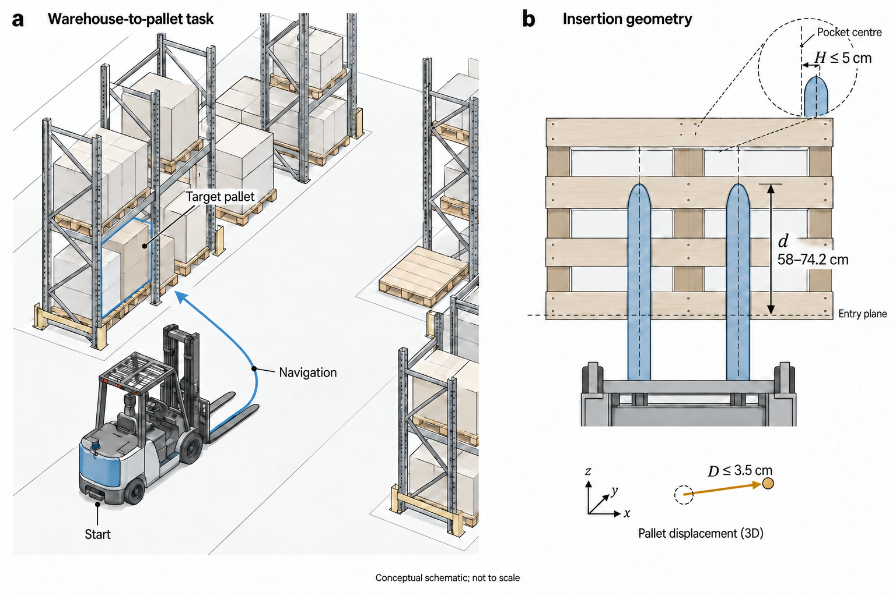
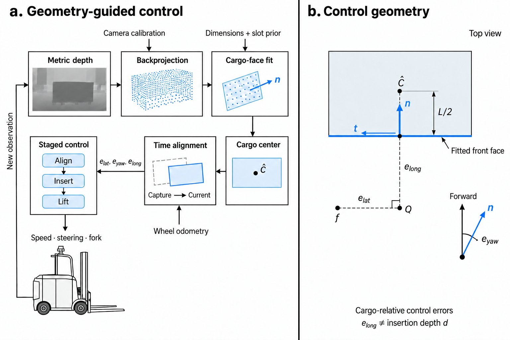
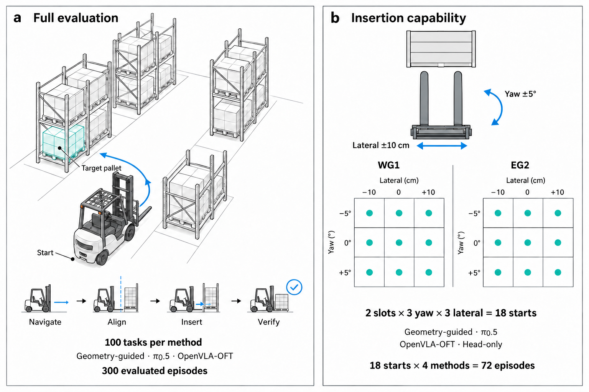

ForkSentinel
Perception-Guided Autonomous Forklift Control
and Capability Evaluation
A complete warehouse pickup
A successful 72.9 s demonstration rerun of T008, from warehouse navigation to insertion, lift and hold. Shown at 1× with main RGB, metric depth and a following third-person camera.
Overview
Geometry-guided forklift pickup.
ForkSentinel combines metric 3D perception with staged control for autonomous forklift pickup. We evaluate the complete trajectory from warehouse navigation to insertion and load verification, alongside π0.5 and OpenVLA-OFT adapted from shared expert demonstrations.
Two evaluations separate full-trajectory performance from local insertion capability. Both report strict task completion and fork entry.
Task
From a warehouse start pose
to a precise insertion.
Starting from a valid pose anywhere in the warehouse, the forklift must navigate to a designated rack, align with the target pallet, and insert both forks. The evaluated trajectory also includes a lifting-and-holding check to verify load handling.

a, Navigation from a valid warehouse start pose to the designated pallet at a left-hand rack. b, Insertion checkpoint. All three geometric conditions below must pass; crossing the pallet entrance alone is insufficient.
- d = 58–74.2 cm
- Insertion depth. Each fork must lie within this window at the final valid sample strictly before lift-start.
- H ≤ 5 cm
- Fork-to-pocket alignment. At that same sample, the larger of the two fork-tip lateral errors, each measured against its own nominal pocket center, must be within this limit.
- D ≤ 3.5 cm
- Pallet displacement. The maximum 3D displacement of the pallet center from its pickup-start position must stay within this limit throughout the pre-lift interval.
Model geometry. On the 80.2 cm-deep pallet model, the depth window spans about 72–92% of the pallet depth and leaves about 6.1 cm to the rear edge at its upper bound. The channels are roughly 36.1 cm wide and the forks 16 cm wide; the 5 cm alignment limit measures precision within that clearance. These dimensions support interpreting the project settings; they do not make the exact thresholds industrial standards.
Operational guidance. CCOHS advises: Insert the fork all the way under the load
, and cautions against rear protrusion in tight stacking. This supports adequate engagement and rear clearance, without prescribing our depth window.
Research basis. Huemer et al., ADAPT, §4.3 derives platform-specific insertion tolerances from geometry and reports a lateral tolerance of ±5 cm.
Method
Metric geometry.
Staged control.
Our controller converts calibrated metric depth into a fitted cargo front face, tracks the resulting relative pose with odometry, and uses that geometric feedback to align, insert, and lift. Two adapted VLA policies provide the comparison.
| Method | Neural parameters |
|---|---|
| Ours | 0.078M77,779 · loaded depth head |
| π0.5 | ≈ 3.40BFull policy |
| OpenVLA-OFT | ≈ 7.64BFull policy |

Depth back-projection
Metric depth z and calibrated intrinsics K recover points in the optical frame O. The calibrated camera transform, corrected for fork height, maps them into body frame B; the target-slot prior and height band select the fitting region.
Cargo face and center
A slot-guided normal search and two principal-component refinements fit the front face. Here xi are horizontal inlier coordinates in body frame B; n and t are the face’s unit normal and tangent. The midpoint q̄ of the 1st and 99th tangent percentiles and known cargo depth L = 0.50 m recover the center; geometric validity checks reject unsuitable fits.
Capture-time alignment
Wheel odometry aligns an observation captured at time c with control time t through odometric frame W. Here p and ψ are odometric position and heading, and R is planar rotation; the face normal is rotated consistently.
Relative control errors
The nominal fork-tip reference is f = [2.146, 0]T m in the body frame; α is the current face-normal angle. The cargo-center-relative coordinate elong differs from insertion depth d used to score success.
Stage-dependent control
Align: target ℓ = −0.55 m, gains (klat, kyaw) = (12, −3), speed 0.03–0.08 m/s.
Insert: target ℓ = 0.22 m, gains (1.5, −1.5), speed 0.025–0.10 m/s.
The clipping operator uses each stage’s speed interval while driving; distances use meters and angles radians. Measured fork-height gates and stage completion govern when to move, and execution limits bound the requested actions; geometry supplies the pose directly.
Demonstrations
One shared dataset
for the VLA baselines.
382 successful expert episodes · 101,894 frames. The demonstrations cover alignment, insertion, and lifting. A split by seed assigns 344 episodes to training and 38 to validation.
Both policies use the same training split. The held-out episodes monitor OpenVLA-OFT; π0.5 consumes only the training split.
| Policy | Initialization | Adaptation | Updates | Batch |
|---|---|---|---|---|
| π0.5 | π0.5 base | LoRA on the vision–language backbone and action expert | 20,000 | 32 |
| OpenVLA-OFT | OpenVLA 7B | Rank-32 LoRA, continuous L1 action head, and proprioception projector | 40,000 | 168 × 2 accumulation |
Input: fork-mounted RGB, task instruction, and state st = (fork height, steering, forward speed). Output: eight actions, each commanding forward speed, steering, and fork vertical velocity.
15 Hz action execution 8 actions per chunk 1.875 Hz nominal fresh-image replanning.
Result
Two evaluations.
Two definitions of success.
We compare complete navigation-and-pickup trajectories and isolated local pickup. Each recorded trajectory receives two scores: completion of the strict task protocol, and the simpler event of both fork tips crossing the pallet entrance plane.
Full trajectory
100 tasks per method
Three methods, 300 assigned tasks. Navigate from a warehouse start pose to the designated pallet, then perform pickup.
Local insertion
18 starts × 4 methods = 72
Two slots (WG1, EG2) × three yaw offsets (−5°, 0°, +5°) × three lateral offsets (−10, 0, +10 cm).

Strict / Complete task
Geometry: each fork at 58–74.2 cm depth, H ≤ 5 cm, and D ≤ 3.5 cm before lift.
Load: during at least 2 s of executed holding, the lowest pallet corner and cargo center remain at least 6 cm above their pickup baselines. The hold uses zero base-motion commands and a fixed fork-height target, with cargo on the pallet and no load–ground contact.
Protocol: physical support, contact, evidence, collision, and time-budget checks; navigation and handoff where applicable.
Entry-only / Crossed entrance
Both fork tips must cross the pallet entrance plane at the same recorded sample.
This score requires no lift or hold. It measures entry capability independently of the remaining strict task conditions.
| Method | Strict | Entry-only |
|---|---|---|
| Geometry-guided | 83%83/100 | 85%85/100 |
| π0.5 | 29%29/100 | 67%67/100 |
| OpenVLA-OFT | 20%20/100 | 71%71/100 |
| Method | Strict | Entry-only |
|---|---|---|
| Geometry-guided | 100%18/18 | 100%18/18 |
| π0.5 | 16.7%3/18 | 50%9/18 |
| OpenVLA-OFT | 22.2%4/18 | 72.2%13/18 |